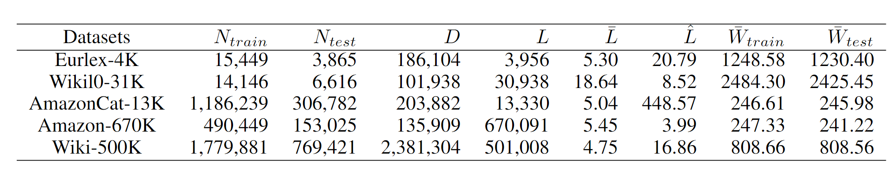
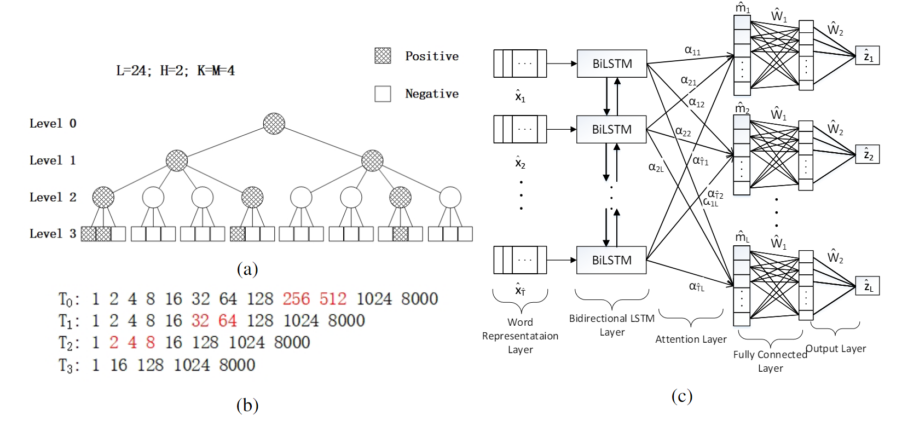
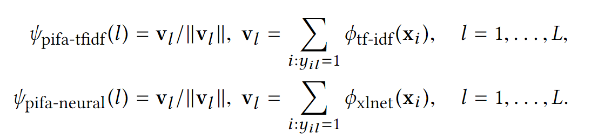
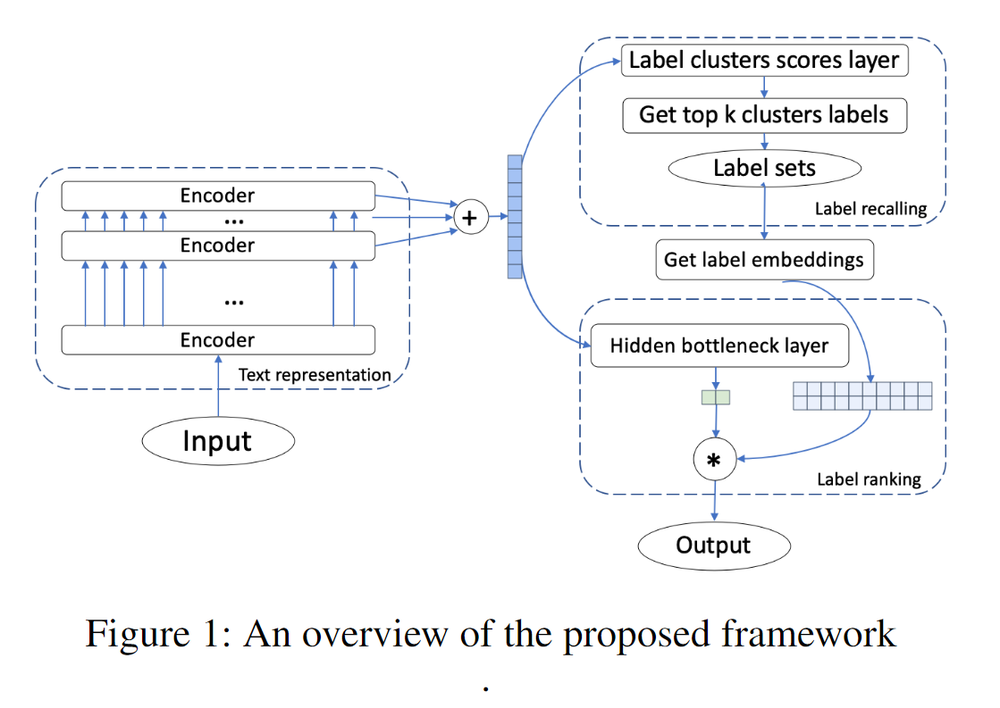
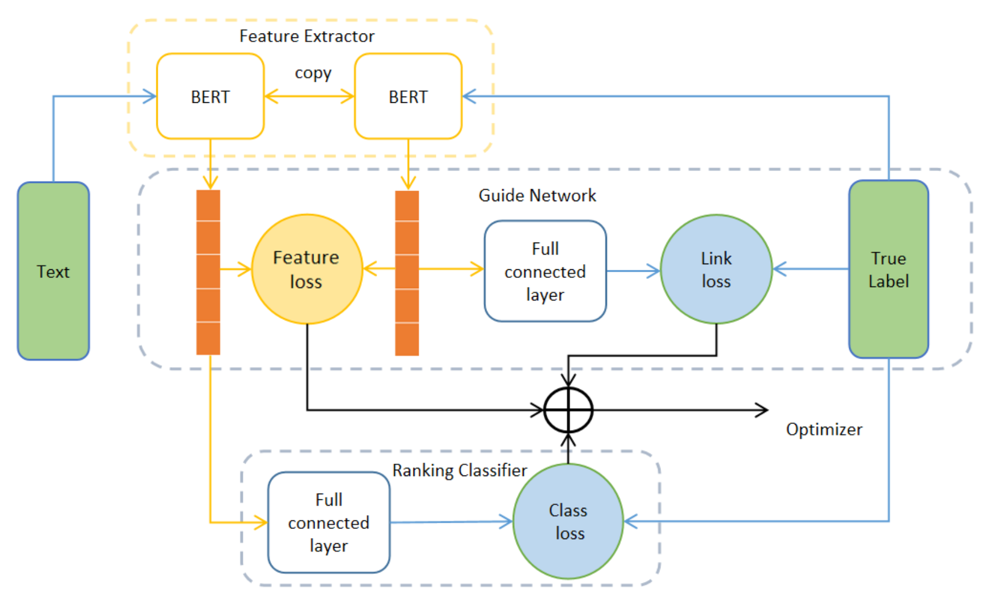
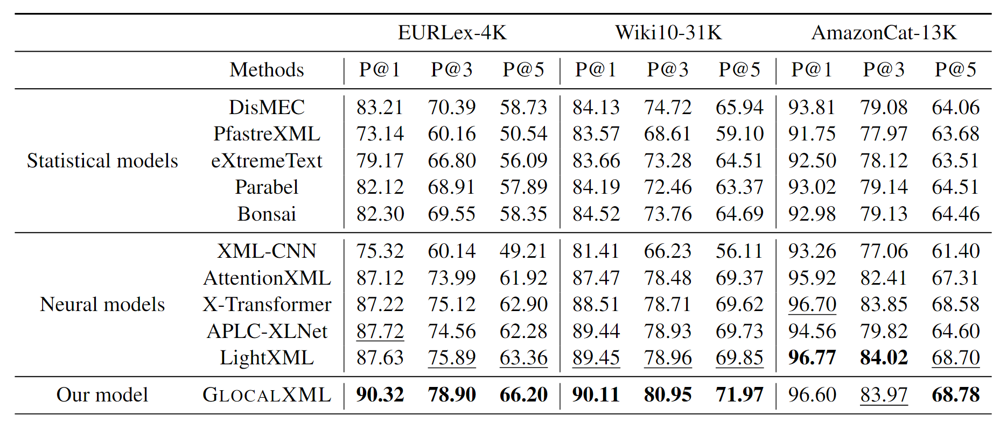
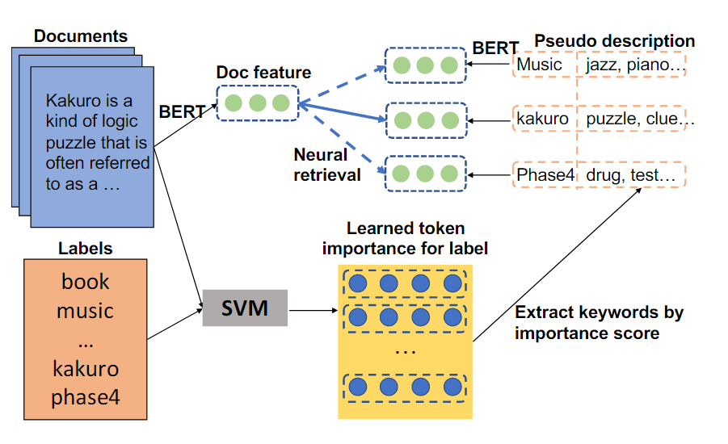
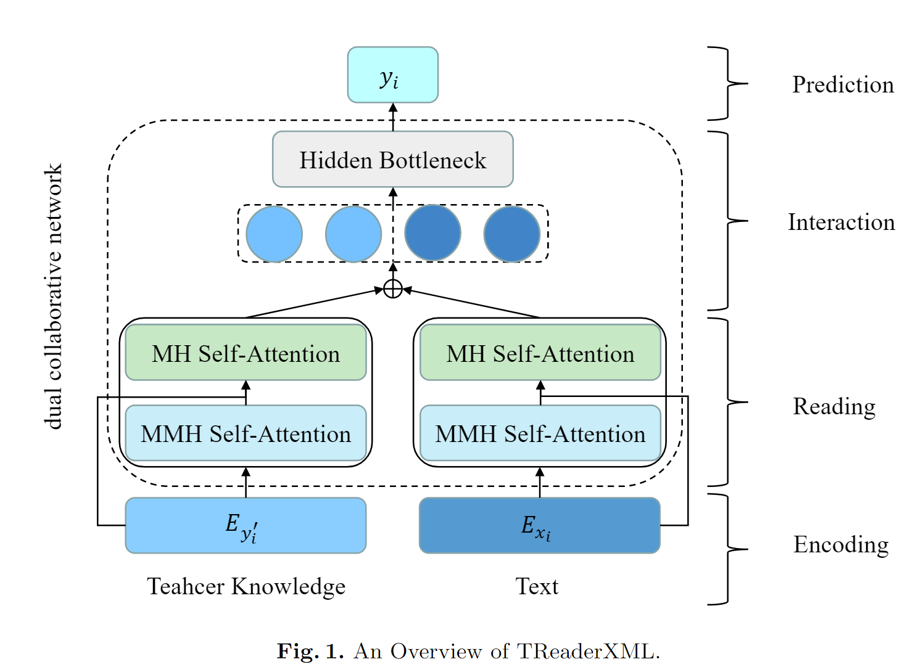
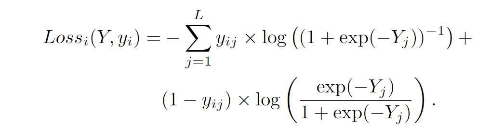

XMTC: 极端多标签文本分类相关工作
摘要
本博客主要总结一下近期看到的一些关于极端多标签文本分类（Extreme Multi-Label Text Classification，XMTC）的相关工作。 之前尝试研究了一个月，发现 SOTA 复现不太出来，只能放弃了换方向了。希望这篇博客能帮到有缘人。
简介
极端多标签文本分类（Extreme Multi-Label Text Classification，XMTC）。给定一段文本，和极多（百、千、万乃至更多）的标签，判断文本所属的标签子集。例如，维基百科有百万级别的标签，每个百科文本都对应若干个标签。亚马逊的商品，有着复杂的垂直标签结构，标签数量也是百万级的。
挑战
XMTC 主要面临以下挑战：
- 稀疏性：大量标签都只有少数样本与之关联，典型的长尾分布
- 计算成本高：标签数量过多，为每个标签独立训练分类器成本过高
- 可扩展性：对新增标签的可扩展性
两个 XMTC 数据集上，只有一半或更少的标签关联至少 5 个实例
解决方法
XMTC 的方法可以分为以下四类：
一对多分类：为每个标签构建 OVR（one vs rest）分类器，可以实现较高精度。但当标签数量过多时，训练、预测开销过大。
目标嵌入的方法：标签矩阵 \(N\times L\) 中，N，L 分别为样本、标签数量。这个矩阵庞大稀疏，难以直接学习到一个可靠的映射。如果可以使用线性映射或者其他方法，完成降维 \(L \rightarrow \hat L\) ，就可以学习到特征 - 降维后的标签间的可靠映射。然后再通过升维 \(\hat L \rightarrow L\) ，得到真实标签。此类方法的差异主要在降维、升维技术上，例如压缩感知、奇异值分解等。
集成树的方法：类似决策树，区别在于使用特征的加权和而非单一特征的信息增益进行划分，健壮性更好。
深度学习方法：使用深度学习特征，而非传统的词袋、tf-idf 特征。
数据集
其中的 L 是标签数量，可以看到大型数据集上，有几十万标签，规模是很大的。

评估指标
对于文档，根据分数输出一个有序的标签列表。然后使用排序指标评估：
- Precision@TopK: TopK 的查准率，越高越好
- NDCG@TopK: 归一化折损累计增益，越高越好
XML-CNN
2017，Deep Learning for Extreme Multi-label Text Classification
首次使用深度学习方法解决 XMTC 问题，使用 CNN + 交叉熵 loss。为了避免池化层后直接接分类线性层的参数过多，中间引入了一个较小的线性层，大小为 \(h\)。
模型结构图，红色的方框为较小的线性层
结果：在六个数据集上基本达到了 SOTA，消融实验证明 BCE 损失、动态池化、小线性层都是有效的。
Attention-XML
2019 AttentionXML: Label Tree-based Attention-Aware Deep Model for High-Performance Extreme Multi-Label Text Classification
做法：
构建宽而矮的概率标签树（plt），减少错误积累
- 首先构造初始标签树，对标签的词袋特征，自顶向下 2-means 做层次聚类，直到类别数 < M
- 对树进行压缩，得到宽而矮的概率标签树
为每一层训练一个 Bi-LSTM 多分类器
- 对每个样本，每层只使用上层该样本的 Top-C 候选的孩子节点训练，类似负采样
- 每个标签对输入序列计算 attention 得到 \(\hat m_i\)，通过共享的全连接、输出层映射到分数
- 预测的时候，使用链式法则，得到每个标签的概率分数
- 使用 BCE loss 训练，使用三棵 plt 集成取得最好性能

结果：未集成的 AttentionXML 已经超过了 XML-CNN 达到了 SOTA，集成后性能提升半个点或更多
X-BERT
2019 X-BERT: eXtreme Multi-label Text Classification using Bidirectional Encoder Representations from Transformers
首次将 BERT 扩展到 XMTC 任务，解决以下挑战：
- 直接分类忽视了标签间的依赖关系、相关性
- SoftMax 瓶颈
论文提出了一个三阶段模型：
- ELMo 编码标签描述 + tf-idf 特征，KMeans 聚类标签得到 K 个簇
- BERT 完成 K 个簇上的多分类
- 使用一对多分类器完成簇内标签的判断
在四个数据集上达到了 SOTA，未与 AttentionXML 比较
X-Transformers
2020，Taming Pretrained Transformers for Extreme Multi-label Text Classification
- XLNET 编码标签描述 + 正样本聚合特征（Positive Instance Feature Aggregation, PIFA），进行分层聚类

- BERT/RoBERTa/XLNET Large + 平方 Hinge-loss 微调聚类标签的多分类（三模型集成效果最好）
- 使用 tf-idf + 嵌入特征，构建线性 OVA 分类器，使用混合采样策略构建负样本
- 使用聚类簇内其他标签对应的样本作为负样本
- 使用其他 Topb 聚类簇内标签样本作为负样本
跟 X-BERT 一批人做的，效果超过了 X-BERT，AttentionXML
LightXML
2021 LightXML: Transformer with Dynamic Negative Sampling for High-Performance Extreme Multi-label Text Classification
动机，解决 X-Transformers，Attention-XML 的以下问题：
- 使用多个模型集成，计算资源和成本过高
- 负样本采样，降低了模型效率和准确性
做法：
- 标签聚类：使用标签的稀疏特征，构造概率标签树，与 Attention-XML 类似，但只有两层，也就是只有一层聚类结果
- 文本表示，使用 BERT/RoBERTa/XLNET base，取最后 5 层的 [CLS] 表征拼接
- 标签召回：根据文本表征完成聚类簇多分类上分数计算，采样所有正样本，由易到难地采样部分负样本
- 计算分数：根据正负样本标签嵌入、文本表征，计算分数，BCE loss
训练资源：
- 1 块 16G V100

数据集统计信息
使用 3 个模型或者 3 个聚类结果进行集成
结果：在五个数据集上超过了 X-Transformers，达到了 SOTA。消融实验证明 5 个 cls 拼接有助于收敛，动态负采样能够提升性能
GUDN
2022，GUDN: A novel guide network for extreme multi-label text classification
动机：LightXML 未使用标签语义信息
做法：
- 特征提取：BERT 编码特征文本，取最后 10 层的 CLS 拼接作为标签提取的特征
- 引导网络：事实上就是辅助 loss。使用以下两种：文档表征和标签表征间的 MSE loss；标签表征用于分类的 BCE loss
- 分类排名：对中等数据集直接使用线性层分类；对大标签数据集使用 BOW 聚类 + 动态负采样，类似 LightXML

实验资源：
- 4 块 24G 3090
结果：
在四个数据集上基本达到了 SOTA，超过 LightXML。消融实验证明，论文提出的两个辅助 loss 是有效的。
GLO-CALXML
2022，Exploiting Local and Global Features in Transformer-based Extreme Multi-label Text Classification
这篇论文是目前的 SOTA，把 Eurlex-4k 数据集上的 precision 提高了 3 个点多，可惜我没有复现出来。
动机：传统方法只使用 CLS 作为文档表征，只有全局表征，可能缺失信息。
做法：
- 每个标签有 global embedding 和 local embedding
- global embedding 和 cls 计算全局概率，local embedding 作为 query 与第一层所有 token embedding 做 attention，取加权和计算局部特征的概率
- loss：两个概率的 BCE loss 之和
- 预测：使用两个概率平均值
我猜测这篇论文是从 Eurlex-4k 数据集得到的启发，该数据集由关键词组构成，并不是通顺的句子。所以编码器更高层的表征意义不大，并不存在复杂的上下文。浅层表征反而可以保留更多信息。基于此，设计一个 attention 去直接接触浅层表征是很自然的想法。而且这种 global 和 local 结合的工作印象里也挺多的，多文本分类 MLC 上好像就有。
实验：
- 没有使用标签树，只在标签较少的三个数据集上进行了实验
- 使用 3 个预训练模型集成
- 在两个数据集上超过了 LightXML（只使用单模型的情况也是超过的）， 与 GUDN 互有胜负
- 消融实验证明，局部特征和全局特征的融合是有效的
以下是三模型集成结果，可以看出在 Eurlex-4k 和 Wiki10-31K 上分别有 3 个点、2 个点的提升，有点降维打击了。

DEPL
2022，Long-tailed Extreme Multi-label Text Classification with Generated Pseudo Label Descriptions
动机：传统模型都使用 precision@topk 指标，该指标不能很好反应尾部标签的分类性能，论文提出使用 macro-averaged F1@k，使得不同标签有相同的权重。
横坐标，数量由少到多的标签 id，纵坐标，Macro-F1@19
做法：
将 XMTC 定义为检索任务，根据文档检索标签。为了解决标签文本过短的问题，使用 SVM 构建分类器，并根据 token 重要性生成标签伪描述。具体来说：
- 基于文档的 tf-id 特征 + 点积相似度函数 + hinge loss 训练稀疏分类器，训练维度为词表大小的 label embedding，将其中元素认为是 token 对 label 的重要性，选 topk 的 token 拼接到标签名后
- 使用 BERT 编码，文档表征选择 cls，标签表征选择最后一层的池化结果，使用点积衡量相似性
- 负采样，根据第一步分类器的 top 负样本和随机填充的负样本构建标签子集
- 融合：文档表征后接线性层，得到概率分布 A；点积相似性结果得到另一个概率分布；两者平均作为最终结果
框架如下：

评价指标：除了 P@k，Macro F1@K，还有 PSP@K，PSP@K 是加权版的 P@K，预测正确尾部标签的收益更高
结果：在 Macro F1@k，PSP@K 上达到了 SOTA，P@K 要弱一些；消融实验证明，伪标签描述对于尾部标签预测是有效的
TReaderXML
2022 Exploiting Dynamic and Fine-grained Semantic Scope for Extreme Multi-label Text Classification
一篇比较奇怪的论文
动机：传统方法使用聚类获得标签簇，但是这些簇只有粗粒度的语义，难以建模具体语义
做法：构建细粒度的教师知识优化样本语义
基于层次结构假设，如果一个样本与标签 A 相关，与标签 A 的父标签也相关
对于每个文档样本 x，遍历其他样本，找到与其余弦相似度 topk 的样本
将该样本对应的标签、父标签（标签树）编码平均后，得到教师知识
使用一个掩码多层自注意力（自左向右）、一个多头注意力层完成编码过程

损失函数：基于最大熵的多标签一对多损失

实验结果：在两个数据集上超过 LightXML 达到了 SOTA